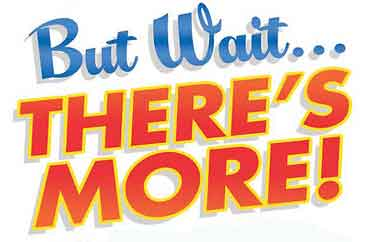
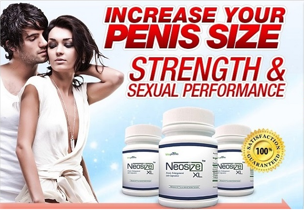

Daryush "Roosh" Valizadeh created ROK in October 2012. You can visit his blog at RooshV.com or follow him on Twitter and Facebook.


I want to share my strategy for book launches to help fellow indie authors. While no book launch is the same, what I’m about to explain applies to my most recent book launch for Free Speech Isn’t Free.
I segment audiences for my book into four groups:
For book launches, I mainly focus on the first group with slight targeting on the second group. After the book launch, I can target the second group by highlighting reviews or excerpts that make them realize the book is indeed relevant to their needs. I do not target the third or fourth group. This would require SEO work for the book’s keywords, advertising on Google or Facebook, or working with affiliate marketers to sell the book for a commission. I see that as an entirely different set of business skills.
Before your book launches, put it in the news by sharing what it’s about while allowing readers to shape the final product. I asked my readership for help on a title and also had them vote on the cover. The title and cover I ended up going with was heavily influenced by their opinions, so not only was doing that a way to let them know a book was coming, but it improved the final result.
Next, be generous with giving review copies to bloggers and readers. Share their reviews with everyone on your blog and social networking accounts.

A new book is coming out… so what? Why should someone dive into reading something new without waiting to more carefully evaluate if it’s a quality work or not? Personally, I see no need to buy a new book when it’s released, because it’s not like the book is going to be taken off the shelves. But if you give me bonuses or a discount with a deadline attached then that may light a fire under my ass to buy it sooner than I had planned.
For Free Speech Isn’t Free, I included two written bonuses and a 30% discount. Some readers will buy because of the bonuses and others who are more budget conscious will buy because of the discount. You should include both in your launch.
I have experimented with both 3-day and 7-day launches. It’s clear that 7-day launches will improve sales, but it takes far more work since you need to keep pumping out book-related content and sales messages for longer.

I hate to use the word spam but that’s what it felt like from my perspective. I put out multiple posts here and on ROK, mostly highlighting reviews or aspects of the book. I sent countless mailings to my email list. I made dozens of tweets. I added page alerts, modified sidebars, and sent messages to forum members. I structured the promotions so that it would be impossible for a reader of mine to not know that I have a new book out.
It’s important to understand that not all of your readers come to your blog or Twitter every day. Most of them are casual readers who only stop in every now and then, so you must use every available channel to bombard them with the news, right up to the point where they get sick of it (you don’t want to piss them off).
In spite of my relentless promotions, I didn’t receive one complaint, so I probably could have done more (my Youtube efforts were especially weak, with only one video published). Readers understand that you’re trying to make a splash with your new product, and will give you a pass as long as it doesn’t last too long.
Since most of my launch efforts involved promoting the book to readers who are interested in the topic and story, I didn’t “sell” it with marketing language. The reason is that I’m not particularly skilled or interested in “internet marketing,” especially if it’s not a self-improvement work like a game book, which lends more to that style of marketing.

You will get a lot of feedback from people who read the book. Since their feedback is already a written “review,” ask them politely to leave it on Amazon or whatever platform your book is selling on. For me this was essential because SJWs bombed the book with fake reviews.
If you’re selling on Amazon, the goal is to give your book a big sales push so that it’s listed in the “Customers also bought” section of others books that have high sales ranks. Otherwise, you’ll see very little benefit of being on Amazon’s platform.
I also sell books directly through BangGuides.com. I receive a higher percentage of the sale price, don’t need to worry about fake reviews, and can offer combo specials that greatly increase the transaction price while giving large discounts to readers. For example, I would have to sell 10 books on Amazon to make the same as roughly 1 USB card that I sell directly. If your business credibility is high, like mine is, it won’t be difficult to sell higher priced products.
Some books sell at higher levels post-launch and others do worse. For example, sales of my books like Poosy Paradise and Why Can’t I Leave A Smiley Face? didn’t maintain high levels after launch, while Bang and Day Bang surpassed launch sales. You will need to hope that your book goes “viral,” and one way to help that along is to continually plug your book in related articles or videos you publish in the months ahead. From this point on, whenever I write a culture war article, I will plug Free Speech Isn’t Free at the end.
So that’s my general strategy. As long as you have a readership, no matter what size, you can participate in a launch. Simply identify all the channels where your readers congregate to receive your content and then go through the above steps. The more readers you have, of course, the more books you will sell. My launch of Bang in 2007 resulted in less than 100 copies sold while my newest launch was over 1,100. I expect future launches to equally well as long as I continue to give great value to those who follow my work.
This article was originally published on Roosh V.
Read Next: 18 Self-Publishing Tips That Have Helped Me Sell Over 25,000 Books